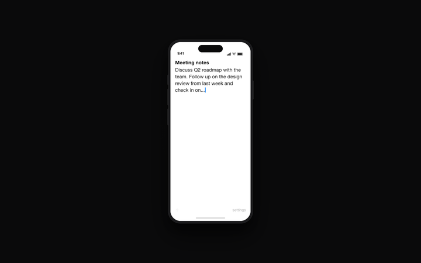

1 Swipe Quick Capture Notes
Fling
A tiny iPhone app for catching a thought, swiping up, and saving it as a plain Markdown note.

What It Does
Fast capture, quiet storage.
- Swipe up to save a note as a Markdown file.
- Use iCloud Drive by default, or pick any Files-compatible folder.
- Dictate notes with live transcription when typing is not convenient.
- Connect a webhook with a simple verified connection link.
- Fall back to local Files storage if the selected destination is unavailable.
Support
Need help?
Fling is a quick-capture app for saving notes as plain Markdown files.
By default, Fling saves notes to iCloud Drive. You can also choose any Files-compatible folder in Settings.
If your destination is unavailable, Fling tries to save the note locally in the Files app container so your note is not lost.
For help, email sober@duck.com with your device model, iOS version, and what you were trying to do.
Privacy
Plain-language policy.
Effective date: June 1, 2026.
Fling does not require an account, does not include ads, and does not include analytics or tracking SDKs.
Fling stores app settings on your device, including preferences such as sound, haptics, text size, selected destination, and clear-gesture settings.
If you choose a custom folder, Fling stores a security-scoped folder bookmark so it can keep saving notes to that folder. If you connect a webhook, Fling stores the secret token in the iOS Keychain and stores non-secret connection details in app settings.
By default, Fling saves notes to the app's iCloud Drive folder. iCloud syncing is handled by Apple and your Apple ID settings. If you connect a webhook, your note content is sent to the webhook URL you configured.
Fling asks for microphone and speech recognition permission only if you use voice dictation. Dictation is handled through Apple's system speech-recognition services.
You can delete saved notes from the folder where they were saved. You can disconnect a webhook in Settings. You can remove local Fling data by deleting the app from your device.